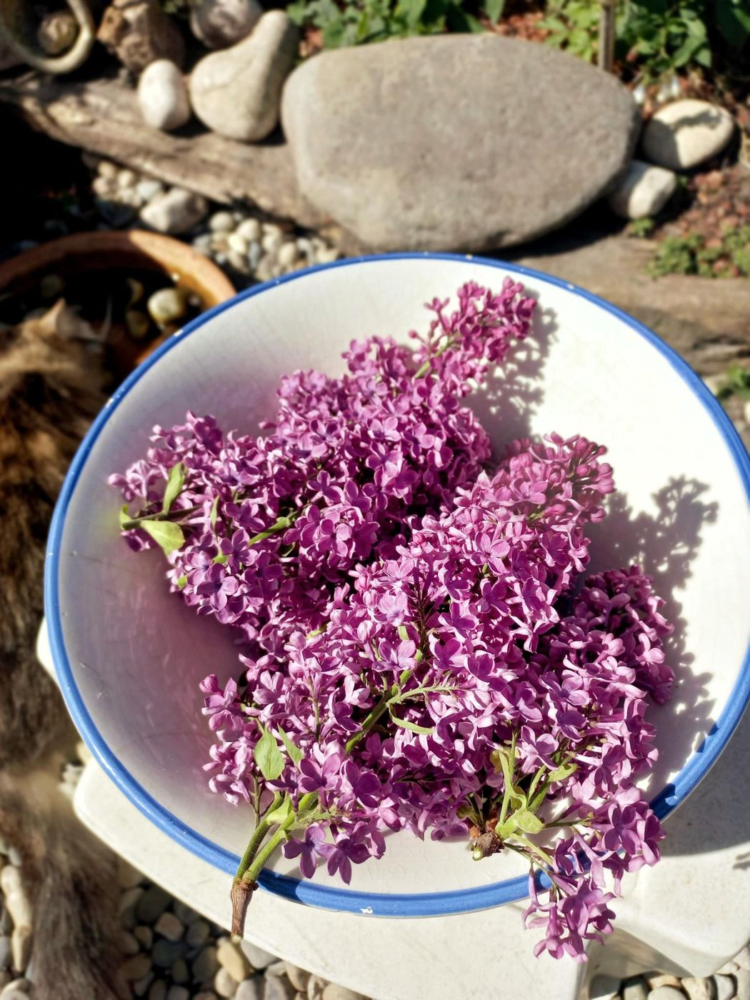
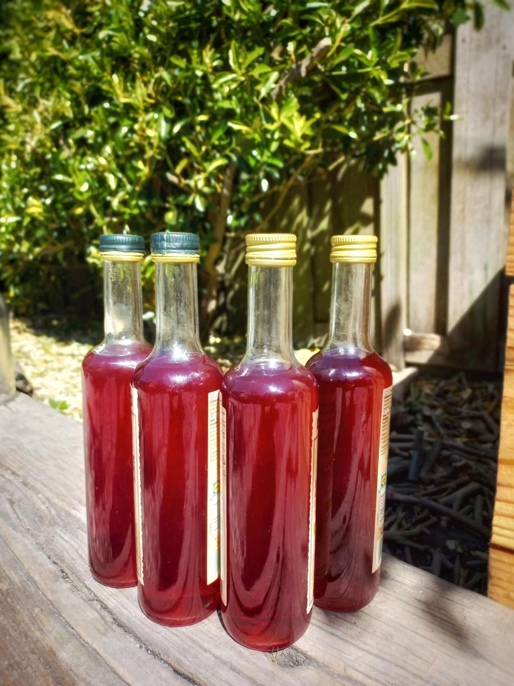

Workshop Conserveren, Delen & Duurzaamheid
Van oogst naar voorraad.
Waarom conserveren?
Voedsel conserveren is een eeuwenoude manier om oogsten langer houdbaar te maken en voedselverspilling te voorkomen.
Door zelf voedsel te verwerken leer je bewuster omgaan met wat de natuur voortbrengt en vergroot je je zelfstandigheid.
Conserveren is niet alleen praktisch, maar ook creatief, verbindend en ontspannend. Zelfgemaakte producten uitwisselen is niet alleen kostenbesparend maar ook tijdsbesparend.
Conserveren draagt bij aan:
- gezondheid;
- autonomie;
- financiële besparing;
- duurzaamheid;
- creativiteit;
- mindfulness.
Van oogst naar voorraad
De workshop vormt een natuurlijke aanvulling op de permacultuurtuin.
Wat in de tuin groeit kan worden verwerkt tot producten die langer houdbaar zijn. Zo leren deelnemers de volledige kringloop kennen: van bodem en zaad tot oogst en conservering.


- Bodem
- Zaad
- Oogst
- Conservering
Wat leer je?
Tijdens de workshops kun je kennismaken met:
Fermenteren
Zoals zuurkool, kimchi en gefermenteerde groenten.
Inmaken
Groenten, fruit, pesto’s en chutneys bewaren, soepen.
Drogen
Kruiden, fruit en andere producten.
Siropen en jams maken
Werken met seizoensproducten.
Huishoudelijke producten
Natuurlijke en duurzame alternatieven.
Natuurlijke verzorgingsproducten
Afhankelijk van de wensen van de groep.


Meer dan een workshop
De workshop draait niet alleen om techniek. De één heeft al ervaring en de ander komt net om de hoek kijken, wat telt is motivatie om te leren, te delen en uit te wisselen met elkaar.
Samen koken, maken en proeven creëert ontmoeting en verbinding. Deelnemers ondersteunen elkaar, wisselen culinaire tradities en ervaringen uit en bouwen samen aan een veilige gemeenschap. Kennis is allom aanwezig en zo draagt iedereen een stukje bij om de workshop tot een succes te maken.
Veel deelnemers geven aan dat zij thuis verder gaan met wat zij geleerd hebben en hun producten delen met familie, vrienden, buren en deelnemers.
Herstel en ontmoeting
De workshop biedt een veilige omgeving waarin mensen samen leren, ervaringen delen, zelf gemaakte producten uitwisselen en elkaar ondersteunen.
Veel deelnemers ervaren meer zelfvertrouwen, verbondenheid en eigen kracht.
Ervaringsdeskundigheid
De workshop wordt begeleid vanuit ervaringsdeskundigheid. Victor van de Poel heeft aan de HvA de Associate Degree Ervaringsdeskundigheid in Zorg en Welzijn behaald in 2025.
Ontwrichting, herstel, autonomie en veerkracht zijn geen abstracte begrippen, maar ervaringen die actief worden ingezet in de begeleiding van deelnemers.
Hierdoor ontstaat een gelijkwaardige omgeving waarin ruimte is voor ieders verhaal en tempo.
Doe mee
De conserveerworkshops vinden gemiddeld eens per twee weken plaats in het Dapperhuis, Eerste van Swindenstraat 511, Amsterdam-Oost.